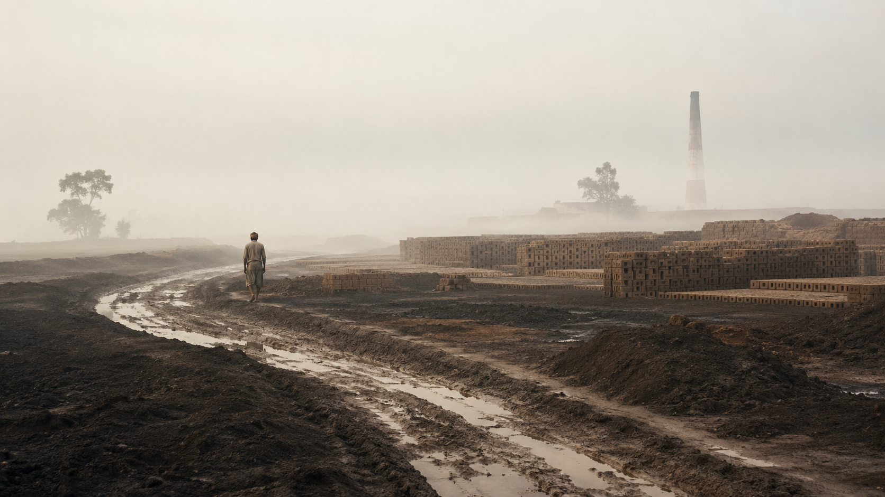
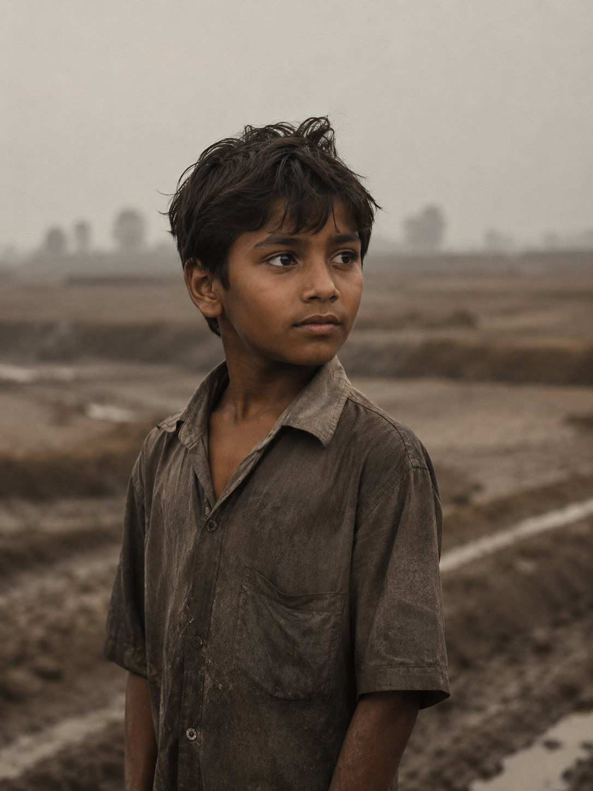

We cannot fix what we cannot see.

The Mathematics of Negligence.
This is not just a human tragedy; it’s a huge financial drain. Over 40% of deaths from local hazards are young breadwinners. The system loses a lot of money overall while only paying out tiny amounts to families.
₹7.5 Lakh paid in compensation.
₹4.5 Crore lost human productivity per life.
GDP lost annually to poor infrastructure.

The best sensors
don't use batteries.
Top-down municipal mapping fails because it relies on static surveys. But there is a demographic that walks these specific dirt paths, alleys, and kiln routes every single day. Children.
By treating migration, age, and language not as roadblocks, but as design variables, we transform marginalized youth into active, hyper-local data sensors.
Survival disguised as science.
If we teach a traditional safety class in environments that don't reward traditional learning, we fail. So, we are trying to design a "Need-Based" survival curriculum disguised as a mapping game.
Tentative Plan — Subject to field constraintsData Collection
Data collection through children.
The Formula
We process the analog data collected by the children into a core community scoring metric:
Digital Synthesis
Ground teams synthesize this scoring data into a live Vulnerability Map, calculating exact community risk levels.